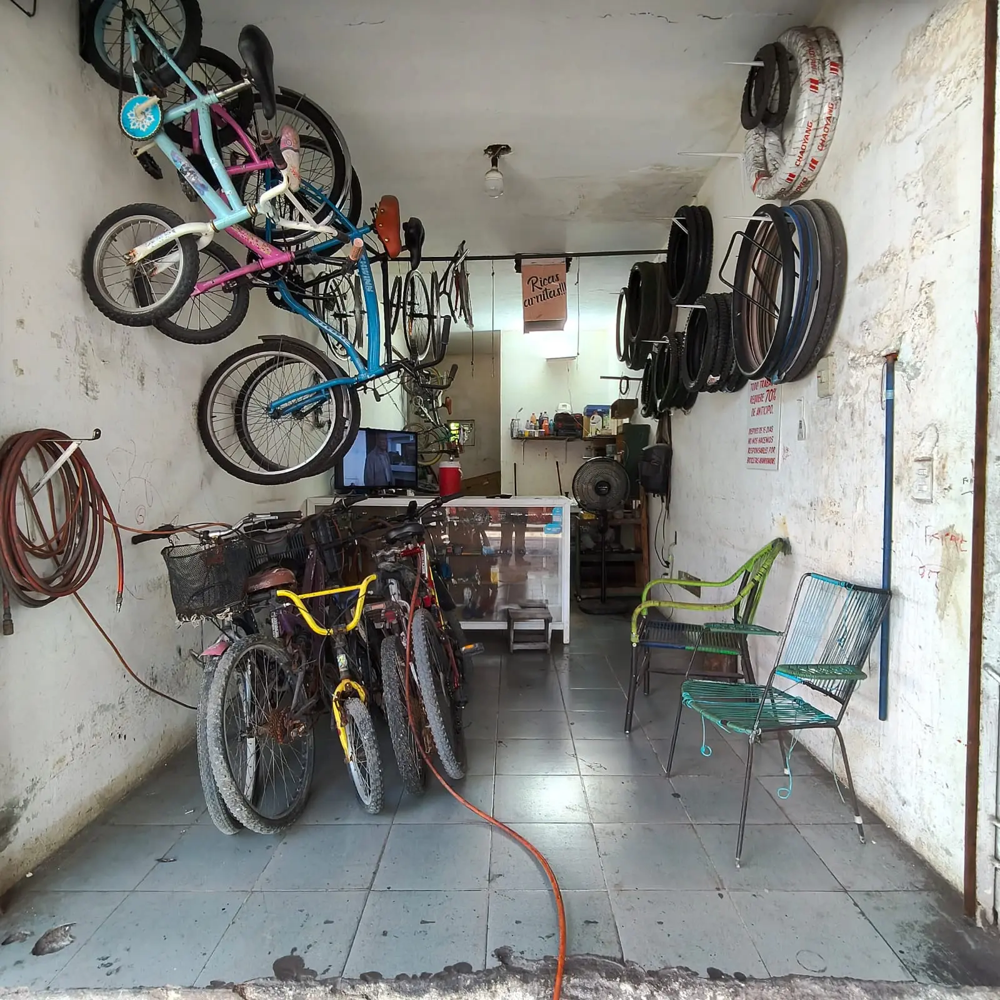
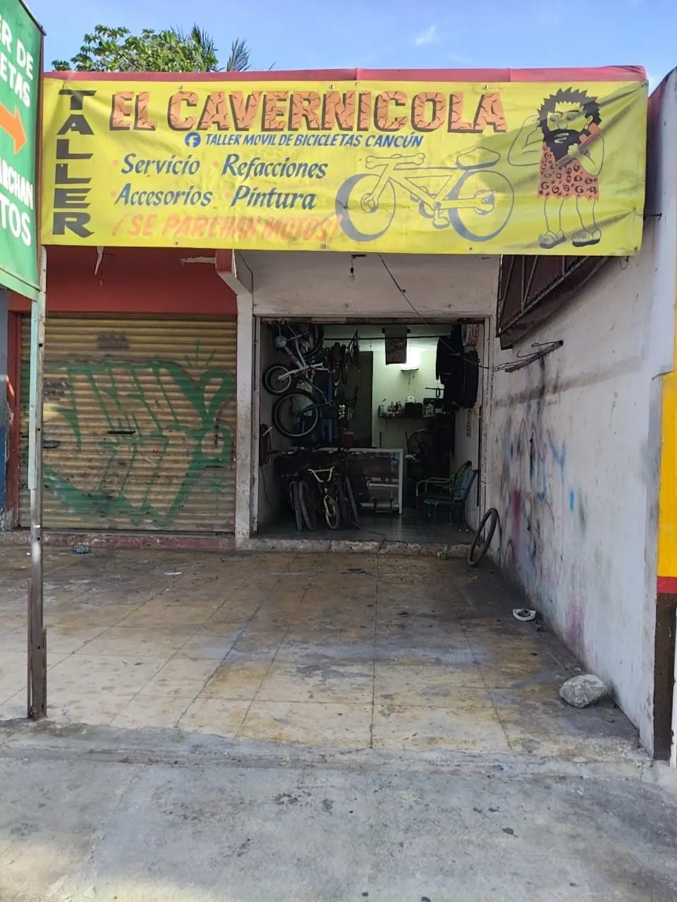
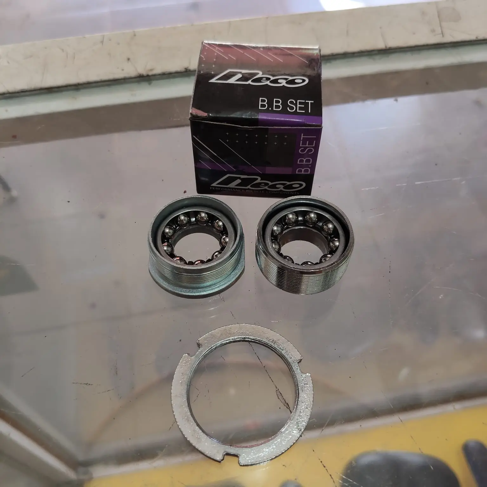

Reparación de bicicletas
Describe la falla, el tipo de bicicleta y cuándo comenzó para orientarte si requiere revisión.
Consultar reparación ↗La reparación, las piezas disponibles y el precio se confirman caso por caso en el taller.
Describe la falla, el tipo de bicicleta y cuándo comenzó para orientarte si requiere revisión.
Consultar reparación ↗Pregunta por una revisión integral para detectar fallas ocultas y prolongar la vida de tu bici.
Consultar mantenimiento ↗Comparte una foto de la pieza rota o modelo. Confirma existencias antes de desplazarte.
Consultar una pieza ↗Con unos datos básicos podemos saber mejor cómo ayudarte y evitar viajes innecesarios.
Indica la marca o tipo de bicicleta, describe la falla y adjunta una foto o video corto.
Pregunta si podemos revisar tu caso en ese momento y si tenemos la refacción lista.
Antes de autorizar cualquier reparación, confirma costos estimados y el tiempo final de entrega.
Escríbenos directamente y explícanos la falla o la pieza que estás buscando.
Consulta primero por mensaje de texto para confirmar que estemos disponibles.
Escríbenos directamente y explícanos la falla o la pieza que estás buscando.
Echa un vistazo a nuestro inventario de refacciones y al área de servicio donde dejamos tu bicicleta como nueva.


